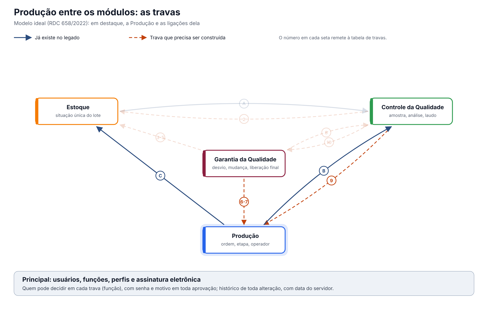

O ideal entre os módulos. A Produção não decide sozinha se pode produzir: antes de cada etapa, ela consulta nos módulos donos a situação do lote, o laudo da sala e da água, o treinamento, o registro do produto e a versão da instrução. O que estiver fora trava a etapa.
Esta página mostra só as travas que envolvem a Produção. O documento completo, com a situação única do lote e as 16 regras para todos os módulos, é "Qualidade entre os módulos: situação do lote e travas" (modelo-ideal/01-qualidade-entre-modulos.md), na Visão entre módulos. Os números das travas são os mesmos de lá. Versão 0.1, de 12/10/2026.
1. O desenho

Em destaque, a Produção. Setas contínuas já existem no legado; tracejadas precisam ser construídas.
2. As travas que envolvem a Produção
| # | Trava | Referência | O que a Produção faz | Com quem | No legado hoje |
|---|---|---|---|---|---|
| 1 | Situação única do lote, respeitada por todos | Arts. 157 e 189 | Só separa, pesa e usa lote aprovado e dentro da validade | Estoque, CQ | A autorização do Estoque não consulta a situação do lote; lote e validade digitados |
| 2 | O laudo do CQ muda a situação na hora | Art. 189 | Vê na hora a decisão do CQ sobre insumos e produto | CQ, Estoque | A Autorização Controle da Qualidade x Produção é uma marcação, sem consultar o CQ |
| 3 | Desvio retém o lote | Art. 8º, IX | Lote com desvio aberto fica retido; exceções da Produção abrem desvio | GQ | A palavra "desvio" não existe na Produção |
| 4 | Liberação para venda pela Pessoa Delegada | Art. 8º, XV | Envia o produto acabado ao Estoque em quarentena; a venda depende da Pessoa Delegada | Estoque, GQ | Envio opcional e antes da liberação; a reprovação não chega ao Estoque |
| 6 | Só pessoa treinada executa a etapa | Art. 39 | Confere o treinamento válido do operador antes de cada etapa | GQ | A Autorização Garantia da Qualidade x Produção é uma marcação, sem consultar a GQ |
| 7 | Só produto com registro válido é fabricado | Art. 8º, XV | Só abre a ordem com o registro do produto deferido e na validade | GQ | Validade do registro só informativa |
| 8 | Mudança aprovada antes de implementar, com versão | Art. 8º, XII e XIII | Usa a ordem de produção e a fórmula da versão vigente, criadas por mudança aprovada | GQ, Controle de Documentos | Ordem sem aprovação real; fórmula sem versão; modelo XML trocável em andamento |
| 9 | Água e sala reprovadas bloqueiam o uso | Art. 8º, VIII | Sala e ponto de água com laudo reprovado ou coleta atrasada ficam bloqueados | CQ | Libera pelos próprios registros; o resultado da análise não conta |
3. Regras que valem para todas as travas
Valem também aqui as regras gerais do documento completo (requisitos 12 a 16): histórico de toda alteração com motivo, registro no momento da ação com hora do servidor, assinatura eletrônica nas decisões, acesso por função conferido em toda gravação e integrações que avisam quando falham.
O que a ANVISA pede: textos citados
Texto literal das normas citadas em cada tema, extraído dos arquivos da pasta Documentação/ (RDC nº 658/2022 em português e Guia nº 33/2020) por homologacao/ferramentas/citar_normas_diagnostico.py. "(...)" marca trechos omitidos. No portal, clique na referência de cada tema para ver o texto.
Tema 1 · Situação única do lote, respeitada por todos
RDC 658/2022, art. 157
Art. 157. Os materiais recebidos e os produtos acabados devem ser fisicamente ou administrativamente colocados em quarentena imediatamente após o recebimento ou processamento, até que sejam liberados para uso ou distribuição.
RDC 658/2022, art. 189
Art. 189. Somente matérias-primas que tiverem sido liberadas pelo departamento de Controle de Qualidade e que estiverem dentro de sua data de reteste devem ser utilizadas.
Tema 2 · O laudo do CQ muda a situação na hora
RDC 658/2022, art. 189
Art. 189. Somente matérias-primas que tiverem sido liberadas pelo departamento de Controle de Qualidade e que estiverem dentro de sua data de reteste devem ser utilizadas.
Tema 3 · Desvio retém o lote
RDC 658/2022, art. 8º
Art. 8º Um Sistema da Qualidade Farmacêutica adequado à fabricação de medicamentos deve garantir que:
(...)
IX - os resultados do monitoramento de produtos e processos sejam levados em consideração na liberação do lote, na investigação de desvios e com o objetivo de tomar ações preventivas para evitar desvios potenciais que possam ocorrer no futuro;
(...)
Tema 4 · Liberação para venda pela Pessoa Delegada
RDC 658/2022, art. 8º
Art. 8º Um Sistema da Qualidade Farmacêutica adequado à fabricação de medicamentos deve garantir que:
(...)
XV - os medicamentos não sejam comercializados ou distribuídos antes da Pessoa Delegada pelo Sistema de Gestão da Qualidade Farmacêutica ter certificado que cada lote do produto foi produzido e controlado de acordo com os requerimentos de registro e quaisquer outras normas relevantes à produção, ao controle e à liberação de medicamentos;
(...)
Tema 6 · Só pessoa treinada executa a etapa
RDC 658/2022, art. 39
Art. 39. O fabricante deve fornecer treinamento para todo o pessoal cujas funções sejam exercidas nas áreas de produção e armazenamento ou laboratórios de controle (incluindo o pessoal técnico, de manutenção e limpeza) e para outras pessoas cujas atividades possam afetar a qualidade do
produto.
Tema 7 · Só produto com registro válido é fabricado
RDC 658/2022, art. 8º
Art. 8º Um Sistema da Qualidade Farmacêutica adequado à fabricação de medicamentos deve garantir que:
(...)
XV - os medicamentos não sejam comercializados ou distribuídos antes da Pessoa Delegada pelo Sistema de Gestão da Qualidade Farmacêutica ter certificado que cada lote do produto foi produzido e controlado de acordo com os requerimentos de registro e quaisquer outras normas relevantes à produção, ao controle e à liberação de medicamentos;
(...)
Tema 8 · Mudança aprovada antes de implementar, com versão
RDC 658/2022, art. 8º
Art. 8º Um Sistema da Qualidade Farmacêutica adequado à fabricação de medicamentos deve garantir que:
(...)
XII - estejam implementados procedimentos para a avaliação prospectiva de mudanças planejadas e sua aprovação antes da implementação, levando-se em consideração as notificações e aprovações regulatórias, quando necessário;
XIII - após a implementação de qualquer mudança, uma avaliação seja realizada para confirmar que os objetivos de qualidade foram alcançados e que não houve impacto prejudicial não intencional na qualidade do produto;
(...)
Tema 9 · Água e sala reprovadas bloqueiam o uso
RDC 658/2022, art. 8º
Art. 8º Um Sistema da Qualidade Farmacêutica adequado à fabricação de medicamentos deve garantir que:
(...)
VIII - um estado de controle seja estabelecido e mantido por meio do desenvolvimento e uso de sistemas eficazes de monitoramento e controle para o desempenho do processo e para a qualidade do produto;
(...)